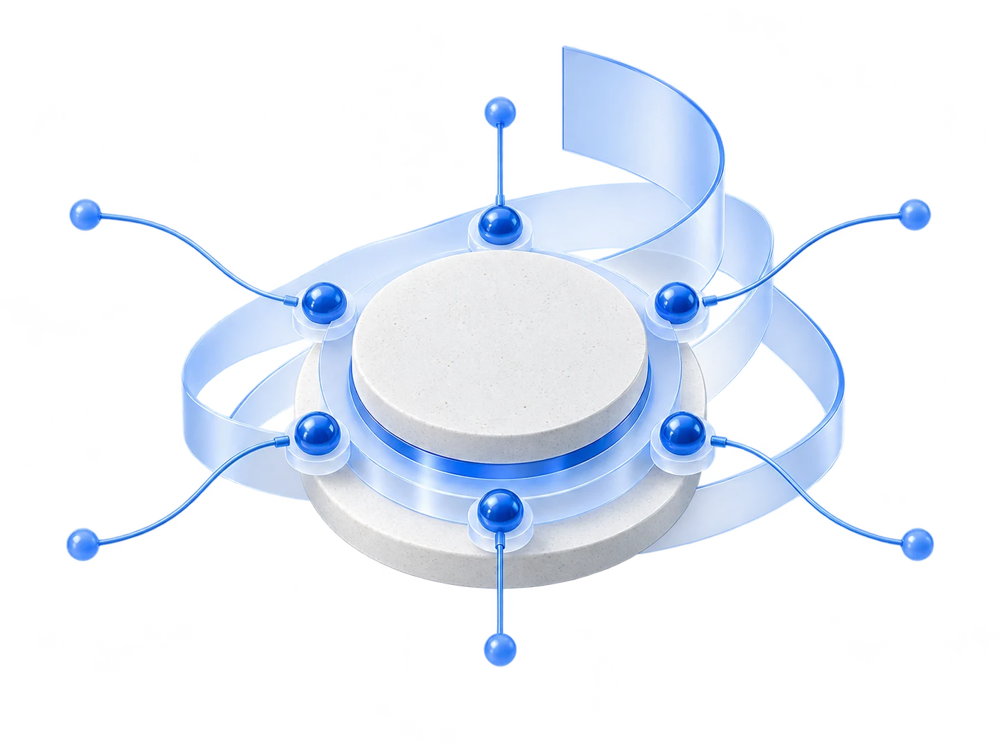
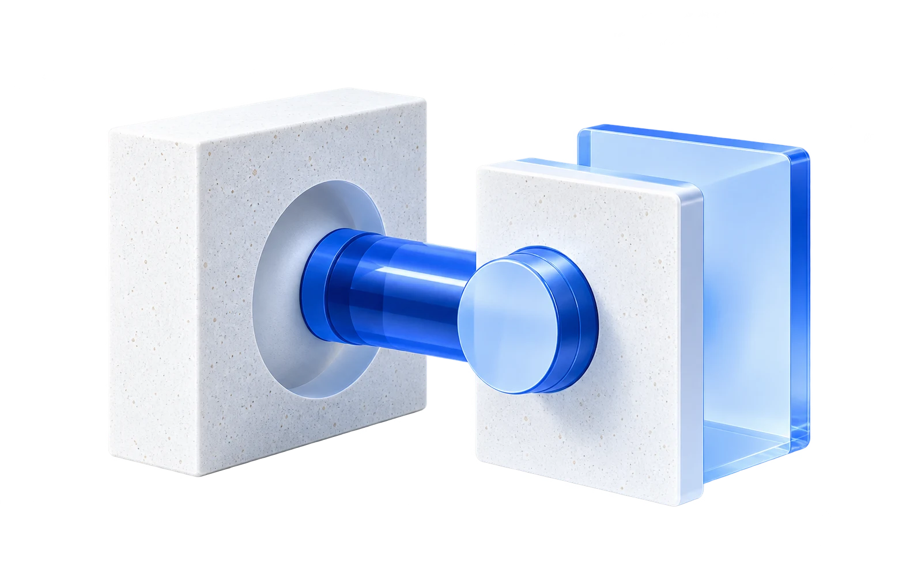

We build for you.
Complex technology, designed around your reality.
ArchitectureSoftware EngineeringCloudAI & DataInteroperabilityAutomation
Explore our expertiseEngineering, digital products and intelligent systems designed to last.

A reliable foundation for your ambitions.
Learn moreProcesses that create value.
Learn moreIntelligence at the service of action.
Learn moreConnect systems. Govern exchanges.
Learn more
Technology for smarter agriculture.
Learn moreOne end-to-end approach, from the first architectural decision to reliable operation and continuous improvement.
Explore our expertiseClient engineering and product innovation reinforce each other. The systems we build sharpen our products. The products we build deepen our engineering.
Complex technology, designed around your reality.
Purposeful platforms shaped by real operational problems.
Infrastructure, intelligence, processes, interoperability and vertical expertise form a connected technology ecosystem. Together, they create more value.
Explore the ecosystemWe bring modern engineering to environments where scale, regulation, resilience and long-term ownership matter.
Digital public services, sovereign platforms and trusted data exchange.
Secure platforms, process automation and resilient architectures.
High-scale systems, automation, APIs and observability.
Interoperable services and responsible data foundations.
Connected ecosystems, traceability and actionable field data.
Products and platforms built for the next phase of growth.
One team carries the intent from the first conversation to a system that performs in the real world and keeps evolving.
Understand the business problem, users and operating context.
Shape the product, experience and service model.
Define a secure, resilient and adaptable technical foundation.
Engineer the software with quality and ownership built in.
Industrialize delivery and release with confidence.
Observe, secure and run the system in production.
Learn from reality and continuously improve what matters.
There is no single infrastructure answer. We design for the combination of public cloud, private cloud, on-premise and local hosting that fits your constraints. We preserve portability, interoperability and long-term control.
Build a scalable digital platform. Drag components onto the canvas, or tap to add them, and see your architecture come to life.
Nice architecture. Now imagine doing this for real.
Craft is the discipline behind every decision: product thinking, engineering excellence, simplicity, continuous learning and ownership from end to end.
From a critical platform to a new digital product, let’s turn complexity into a system that moves your organization forward.
Start a conversation